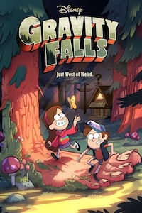
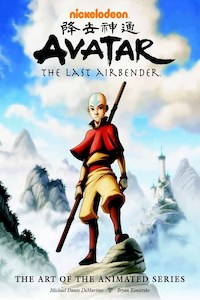
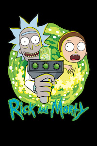
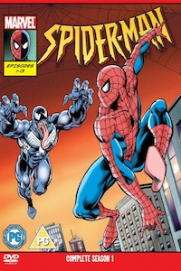
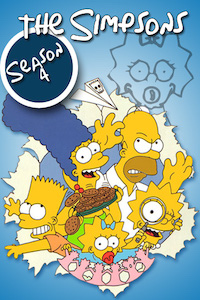

Гравити Фолз
2012-2016
История рассказывает о приключениях близнецов, брата и сестры Диппера и Мэйбл Пайнс,
чьи летние планы отправляются в чулан, когда родители оправляют их к дальнему родственнику в тихий городок Гравити Фолз.
Но так ли прост этот город, родственник и жители, и какие тайны ждут своих первооткрывателей?
Список актёров:
Джейсон Риттер, Алекс Хирш, Кристен Шаал, Линда Карделлини, Кевин Майкл Ричардсон,
Мэтт Чэпман, Кари Уолгрен и др.

Аватар: Легенда об Аанге
2004-2008
Мир разделен на четыре народа: Водные племена, королевство Земли, Воздушные кочевники и Огненная нация.
Представители каждого народа обладают способностями управления своей стихией и именуют себя магами Воды, Земли, Воздуха или Огня.
Только Аватар является властелином всех четырех стихий. Его роль заключается в поддержке баланса между народами и сохранении мирового порядка.
Список актёров:
Зак Тайлер, Джек Де Сена, Ди Брэдли Бейкер, Мэй Уитман, Данте Баско, Джесси Флауер, Мако, Грэй Гриффин и др.

Рик и Морти
2013
В центре сюжета - школьник по имени Морти и его дедушка Рик.
Морти - самый обычный мальчик, который ничем не отличается от своих сверстников. А вот его дедуля занимается необычными научными исследованиями и зачастую полностью неадекватен.
Он может в любое время дня и ночи схватить внука и отправиться вместе с ним в безумные приключения
Список актёров:
Джастин Ройланд, Крис Парнелл, Спенсер Грэммер, Сара Чок, Кари Уолгрен, Дэн Хармон, Морис ЛаМарш и др.

Человек-паук
1994-1998
Случайный укус радиоактивного паука на научной выставке даровал нескладному школьнику Питеру Паркеру невероятные паучьи способности.
Когда грабитель убил его любимого дядю Бена, Питер решает использовать свои удивительные силы, чтобы защищать людей.
Он навсегда запомнил слова своего дяди: «Чем больше сила, тем больше и ответственность!».
Список актёров:
Кристофер Дэниэл Барнс, Сара Бэллэнтайн, Эдвард Эснер, Роско Ли Браун, Родни Солсберри, Дженнифер Хейл, Линда Гэри, Гари Имхофф,
Джозеф Кампанелла и др.

Симпсоны
1989
Мультфильм - пародия на американский уклад жизни.
Семейство Симпсонов состоит из пяти членов: папаша Гомер, мать семейства Мардж, их дочери, Лиза и Мэгги, и несносный подросток Барт.
Список актёров:
Дэн Кастелланета, Нэнси Картрайт, Гарри Ширер, Джули Кавнер, Ярдли Смит, Хэнк Азария, Памела Хейден, Тресс МакНилл, Карл Видерготт,
Мэгги Росвэлл и др.